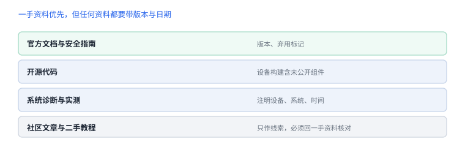

官方资料与源码入口
一手资料优先，版本与访问日期必须一起记
二手教程会过时，官方文档也会。资料清单的价值不在于链接本身，而在于你知道“哪类问题该查哪一来源”，以及如何标注它的时效性。
1. 平台安全与总览
| 来源 | 适合回答 |
|---|---|
| Apple Platform Security 指南 | 启动链、安全隔区、数据保护、签名与加密体系的官方说明 |
| Apple 支持与安全公告 | 已修复问题、影响版本范围 |
support.apple.com/guide/security
2. 开发文档
- Security：钥匙串、证书、信任评估。
- CryptoKit：哈希、认证加密、密钥交换。
- Foundation：文件、URL 会话、位置与容器路径。
- Xcode：构建、符号化、诊断工具。
文档页面通常标注可用版本与弃用状态，这比博客里的“某版本可用”更可靠。

3. 开源与源码
| 入口 | 内容 | 注意 |
|---|---|---|
| apple-oss-distributions | XNU、libc、系统工具等 | 设备构建含未公开组件 |
| opensource.apple.com | 历史版本源码归档 | 版本对应关系需自行核对 |
源码用于建立模型，不等于设备行为的逐字证明。结论应标注“源码观察”，在设备上验证后才升级为“实测”。
4. 工具与诊断
- 分析崩溃报告：报告字段与符号化流程。
- Instruments 指南：性能、内存、系统调用观察。
- WWDC 相关场次：设计意图与新机制说明，注意年份与系统版本。
5. 社区标准
移动应用安全验证标准、通用弱点分类等社区资料适合作为检查清单，但不能替代平台文档；引用时注明来源与版本，避免把建议当承诺。
6. 引用规则
一条可复核的引用
来源：Apple Platform Security（官方指南）
访问日期：2026-11-06
适用版本：文档当前版本（未标注具体系统版本处已注明）
用途：说明数据保护的密钥绑定模型
限制：不含具体设备实现细节，设备行为需自行验证源码观察不是设备事实
公开源码用于建立模型；设备构建含未公开组件，结论要标注为“模型”，经设备观测后才升级为“事实”。
公开源码用于建立模型；设备构建含未公开组件，结论要标注为“模型”，经设备观测后才升级为“事实”。
7. 来源可信度
| 来源 | 可信度 | 必须核对 |
|---|---|---|
| 官方文档 | 高 | 版本与弃用标记 |
| 开源代码 | 中 | 设备构建是否含未公开组件 |
| 系统诊断与实测 | 高 | 设备、系统、时间 |
| 社区文章 | 低 | 必须回一手资料 |
8. 引用要带元信息
一条可核对的引用
标题：App Attest 服务端验证
来源：官方文档
版本/日期：2026-10 访问
链接：https://developer.apple.com/...
用于：第 03 讲“服务端必须校验什么”
局限：未覆盖私有接口与旧系统9. 自测
- 为什么开源代码的结论不能直接当作设备事实？
- 引用官方文档时，哪些元信息必须一起记录？
- 社区标准在书里应如何使用？